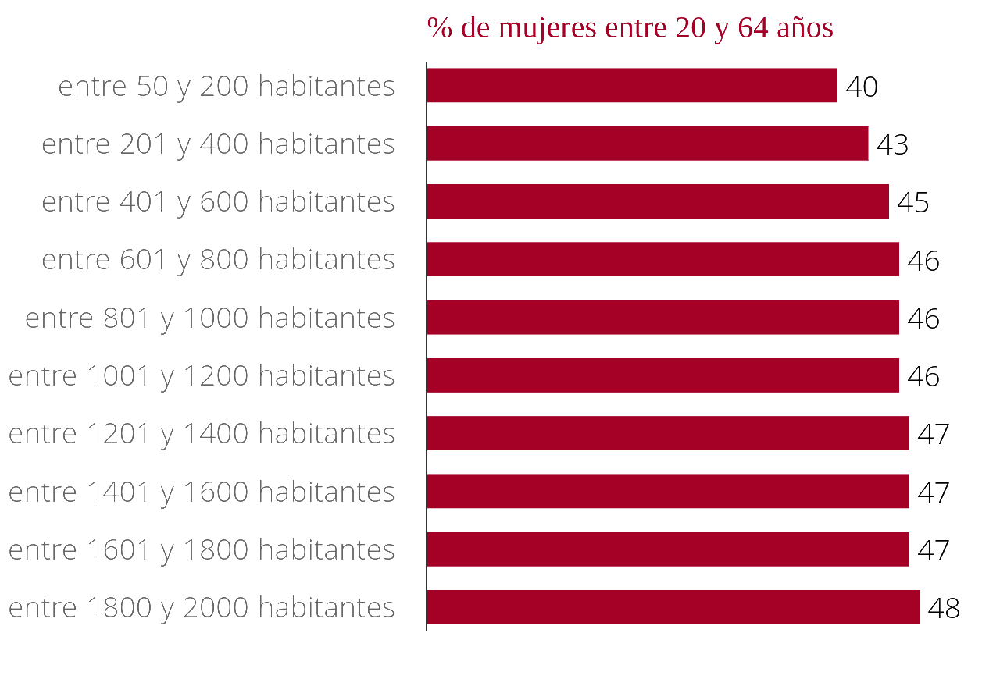

Ser mujer adulta y vivir en un pueblo pequeño, una tarea difícil
En España, el porcentaje de mujeres disminuye a medida que baja el número de habitantes. En los municipios rurales entre 1800 y 2000 habitantes las mujeres representan el 47% de la población en edad de trabajar. El porcentaje disminuye 7 puntos en aquellos cuya población no supera los 200 habitantes.